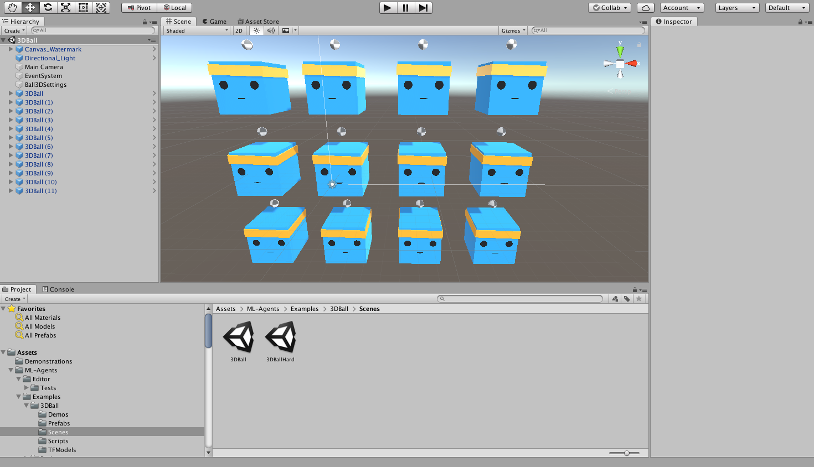

Using an Environment Executable
This section will help you create and use built environments rather than the Editor to interact with an environment. Using an executable has some advantages over using the Editor:
- You can exchange executable with other people without having to share your entire repository.
- You can put your executable on a remote machine for faster training.
- You can use
Server Build(Headless) mode for faster training (as long as the executable does not need rendering). - You can keep using the Unity Editor for other tasks while the agents are training.
Building the 3DBall environment
The first step is to open the Unity scene containing the 3D Balance Ball environment:
- Launch Unity.
- On the Projects dialog, choose the Open option at the top of the window.
- Using the file dialog that opens, locate the
Projectfolder within the ML-Agents project and click Open. - In the Project window, navigate to the folder
Assets/ML-Agents/Examples/3DBall/Scenes/. - Double-click the
3DBallfile to load the scene containing the Balance Ball environment.

Next, we want the set up scene to play correctly when the training process launches our environment executable. This means:
- The environment application runs in the background.
- No dialogs require interaction.
-
The correct scene loads automatically.
-
Open Player Settings (menu: Edit > Project Settings > Player).
- Under Resolution and Presentation:
- Ensure that Run in Background is Checked.
- Ensure that Display Resolution Dialog is set to Disabled. (Note: this setting may not be available in newer versions of the editor.)
- Open the Build Settings window (menu:File > Build Settings).
- Choose your target platform.
- (optional) Select “Development Build” to log debug messages.
- If any scenes are shown in the Scenes in Build list, make sure that the 3DBall Scene is the only one checked. (If the list is empty, then only the current scene is included in the build).
- Click Build:
- In the File dialog, navigate to your ML-Agents directory.
- Assign a file name and click Save.
- (For Windows）With Unity 2018.1, it will ask you to select a folder instead
of a file name. Create a subfolder within the root directory and select
that folder to build. In the following steps you will refer to this
subfolder's name as
env_name. You cannot create builds in the Assets folder

Now that we have a Unity executable containing the simulation environment, we can interact with it.
Interacting with the Environment
If you want to use the Python API to interact with your
executable, you can pass the name of the executable with the argument
'file_name' of the UnityEnvironment. For instance:
from mlagents_envs.environment import UnityEnvironment
env = UnityEnvironment(file_name=<env_name>)
Training the Environment
- Open a command or terminal window.
- Navigate to the folder where you installed the ML-Agents Toolkit. If you
followed the default installation, then navigate to the
ml-agents/folder. - Run
mlagents-learn <trainer-config-file> --env=<env_name> --run-id=<run-identifier>Where: <trainer-config-file>is the file path of the trainer configuration yaml<env_name>is the name and path to the executable you exported from Unity (without extension)<run-identifier>is a string used to separate the results of different training runs
For example, if you are training with a 3DBall executable, and you saved it to the directory where you installed the ML-Agents Toolkit, run:
mlagents-learn config/ppo/3DBall.yaml --env=3DBall --run-id=firstRun
And you should see something like
ml-agents$ mlagents-learn config/ppo/3DBall.yaml --env=3DBall --run-id=first-run
▄▄▄▓▓▓▓
╓▓▓▓▓▓▓█▓▓▓▓▓
,▄▄▄m▀▀▀' ,▓▓▓▀▓▓▄ ▓▓▓ ▓▓▌
▄▓▓▓▀' ▄▓▓▀ ▓▓▓ ▄▄ ▄▄ ,▄▄ ▄▄▄▄ ,▄▄ ▄▓▓▌▄ ▄▄▄ ,▄▄
▄▓▓▓▀ ▄▓▓▀ ▐▓▓▌ ▓▓▌ ▐▓▓ ▐▓▓▓▀▀▀▓▓▌ ▓▓▓ ▀▓▓▌▀ ^▓▓▌ ╒▓▓▌
▄▓▓▓▓▓▄▄▄▄▄▄▄▄▓▓▓ ▓▀ ▓▓▌ ▐▓▓ ▐▓▓ ▓▓▓ ▓▓▓ ▓▓▌ ▐▓▓▄ ▓▓▌
▀▓▓▓▓▀▀▀▀▀▀▀▀▀▀▓▓▄ ▓▓ ▓▓▌ ▐▓▓ ▐▓▓ ▓▓▓ ▓▓▓ ▓▓▌ ▐▓▓▐▓▓
^█▓▓▓ ▀▓▓▄ ▐▓▓▌ ▓▓▓▓▄▓▓▓▓ ▐▓▓ ▓▓▓ ▓▓▓ ▓▓▓▄ ▓▓▓▓`
'▀▓▓▓▄ ^▓▓▓ ▓▓▓ └▀▀▀▀ ▀▀ ^▀▀ `▀▀ `▀▀ '▀▀ ▐▓▓▌
▀▀▀▀▓▄▄▄ ▓▓▓▓▓▓, ▓▓▓▓▀
`▀█▓▓▓▓▓▓▓▓▓▌
¬`▀▀▀█▓
Note: If you're using Anaconda, don't forget to activate the ml-agents environment first.
If mlagents-learn runs correctly and starts training, you should see something
like this:
CrashReporter: initialized
Mono path[0] = '/Users/dericp/workspace/ml-agents/3DBall.app/Contents/Resources/Data/Managed'
Mono config path = '/Users/dericp/workspace/ml-agents/3DBall.app/Contents/MonoBleedingEdge/etc'
INFO:mlagents_envs:
'Ball3DAcademy' started successfully!
Unity Academy name: Ball3DAcademy
INFO:mlagents_envs:Connected new brain:
Unity brain name: Ball3DLearning
Number of Visual Observations (per agent): 0
Vector Observation space size (per agent): 8
Number of stacked Vector Observation: 1
INFO:mlagents_envs:Hyperparameters for the PPO Trainer of brain Ball3DLearning:
batch_size: 64
beta: 0.001
buffer_size: 12000
epsilon: 0.2
gamma: 0.995
hidden_units: 128
lambd: 0.99
learning_rate: 0.0003
max_steps: 5.0e4
normalize: True
num_epoch: 3
num_layers: 2
time_horizon: 1000
sequence_length: 64
summary_freq: 1000
use_recurrent: False
memory_size: 256
use_curiosity: False
curiosity_strength: 0.01
curiosity_enc_size: 128
output_path: ./results/first-run-0/Ball3DLearning
INFO:mlagents.trainers: first-run-0: Ball3DLearning: Step: 1000. Mean Reward: 1.242. Std of Reward: 0.746. Training.
INFO:mlagents.trainers: first-run-0: Ball3DLearning: Step: 2000. Mean Reward: 1.319. Std of Reward: 0.693. Training.
INFO:mlagents.trainers: first-run-0: Ball3DLearning: Step: 3000. Mean Reward: 1.804. Std of Reward: 1.056. Training.
INFO:mlagents.trainers: first-run-0: Ball3DLearning: Step: 4000. Mean Reward: 2.151. Std of Reward: 1.432. Training.
INFO:mlagents.trainers: first-run-0: Ball3DLearning: Step: 5000. Mean Reward: 3.175. Std of Reward: 2.250. Training.
INFO:mlagents.trainers: first-run-0: Ball3DLearning: Step: 6000. Mean Reward: 4.898. Std of Reward: 4.019. Training.
INFO:mlagents.trainers: first-run-0: Ball3DLearning: Step: 7000. Mean Reward: 6.716. Std of Reward: 5.125. Training.
INFO:mlagents.trainers: first-run-0: Ball3DLearning: Step: 8000. Mean Reward: 12.124. Std of Reward: 11.929. Training.
INFO:mlagents.trainers: first-run-0: Ball3DLearning: Step: 9000. Mean Reward: 18.151. Std of Reward: 16.871. Training.
INFO:mlagents.trainers: first-run-0: Ball3DLearning: Step: 10000. Mean Reward: 27.284. Std of Reward: 28.667. Training.
You can press Ctrl+C to stop the training, and your trained model will be at
results/<run-identifier>/<behavior_name>.onnx, which corresponds to your model's
latest checkpoint. (Note: There is a known bug on Windows that causes the
saving of the model to fail when you early terminate the training, it's
recommended to wait until Step has reached the max_steps parameter you set in
your config YAML.) You can now embed this trained model into your Agent by
following the steps below:
- Move your model file into
Project/Assets/ML-Agents/Examples/3DBall/TFModels/. - Open the Unity Editor, and select the 3DBall scene as described above.
- Select the 3DBall prefab from the Project window and select Agent.
- Drag the
<behavior_name>.onnxfile from the Project window of the Editor to the Model placeholder in the Ball3DAgent inspector window. - Press the Play button at the top of the Editor.
Training on Headless Server
To run training on headless server with no graphics rendering support, you need to turn off
graphics display in the Unity executable. There are two ways to achieve this:
1. Pass --no-graphics option to mlagents-learn training command. This is equivalent to
adding -nographics -batchmode to the Unity executable's commandline.
2. Build your Unity executable with Server Build. You can find this setting in Build Settings
in the Unity Editor.
If you want to train with graphics (for example, using camera and visual observations), you'll need to set up display rendering support (e.g. xvfb) on you server machine. In our Colab Notebook Tutorials, the Setup section has examples of setting up xvfb on servers.